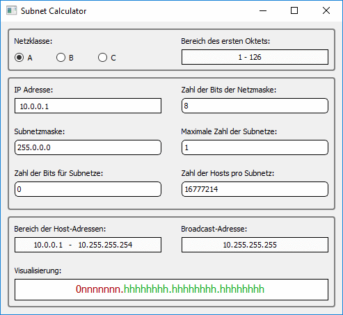

Der (Classful) Subnet-Calculator erlaubt die einfache Berechnungen von Subnetzen, ausgehend von Netzklasse, Zahl der Bits der Netzmaske, Subnetzmaske, maximaler Zahl der Subnetze, Zahl der Bits der Netzmaske und Zahl der Hosts pro Subnetz.
Zudem wird der Bereich der Host-Adressen, die Broadcastadresse und eine Subnet Bitmap angezeigt.
Offline-Anwendung nach: www.subnet-calculator.com
